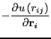

The final case study we will consider in this unit on Monte Carlo simulation is the prototypical system for continuous-space, 3D liquids: The Lennard-Jones fluid. This is detailed in Sec. 3.4, ``Case Study 1'' in Frenkel & Smit [1]. The primary objective of the MC code is to predict the pressure of a sample of Lennard-Jonesium at a given density and temperature; that is, we can use MC to map out (in principle) the phase diagram of a material. We will use this case study to introduce and discuss another important element of a large number of molecular simulations: periodic boundary conditions.
We would like to simulate bulk fluid. The apparently simplest way to
approximate bulk behavior in a finite number of particles is to employ
periodic boundaries. That is, we imagine the box of length  is
embedded in an infinite space tiled with replicas of the central box.
If we focus on the central box, and watch as one particle is displaced
``out'' of the box, it will reappear in the box at the opposite face.
Moreover, particles interact with ``images'' of other particles in all
replica boxes. Periodic boundaries thus allow us to mimic the
infinite extent of bulk fluid.
is
embedded in an infinite space tiled with replicas of the central box.
If we focus on the central box, and watch as one particle is displaced
``out'' of the box, it will reappear in the box at the opposite face.
Moreover, particles interact with ``images'' of other particles in all
replica boxes. Periodic boundaries thus allow us to mimic the
infinite extent of bulk fluid.
| A schematic representation of periodic boundary conditions in two dimensions. The black particle leaves the central box by leaving a through right-hand boundary, and consequently re-enters through the left-hand boundary. The two white particles interact through the boundary. |
Truncation of a pair potential is an important idea to understand, and
F&S devote a significant portion of the MC chapter to it. The major
point is that the cutoff must be spherically symmetric; that is, we
can't simply cut off interactions beyond a box length in each
direction, because this results in a directional bias in the
interaction range of the potential. So, a hard cutoff radius,  is required, and should be less than half a box length. The secondary
point is that, once
is required, and should be less than half a box length. The secondary
point is that, once  is chosen, if you wish to mimic a potential
with infinite range, you must use the correction terms for energy and
pressure described below.
is chosen, if you wish to mimic a potential
with infinite range, you must use the correction terms for energy and
pressure described below.
The system we consider is made of  particles which interact via the
Lennard-Jones pair potential (Eq. 83). The particles are
confined in a cubic box with side-length
particles which interact via the
Lennard-Jones pair potential (Eq. 83). The particles are
confined in a cubic box with side-length  . Length is measured in
units of
. Length is measured in
units of  and energy in
and energy in  , and we consider particles
with 1-
, and we consider particles
with 1- diameters. A code is provided for simulating this
system using Metropolis Monte Carlo
(mclj.c). mjlc.c will compute the
pressure given a temperature and density in the manner discussed in
the text. If a cutoff radius is chosen by the user, then a truncated and shifted pair potential is used, and the following
tail corrections are applied:
diameters. A code is provided for simulating this
system using Metropolis Monte Carlo
(mclj.c). mjlc.c will compute the
pressure given a temperature and density in the manner discussed in
the text. If a cutoff radius is chosen by the user, then a truncated and shifted pair potential is used, and the following
tail corrections are applied:
| (92) | |||
| (93) |
The pressure is computed from
| (95) |
|  | (96) | ||
| (97) |
| (98) |
| (99) |
| (100) |
| (101) |
If you read the code mclj.c, you should see that the initialization of positions is accomplished by putting the particles on cubic lattice sites such that an overall density is achieved. It is therefore convenient to run simulations with numbers of particles that are perfect cubes, such as 128, 216, 512, etc, so that the initial state uniformly fills the box.
Another consideration is that a certain number of cycles should be ``burned'' prior to gathering statistics so this initial state is fully erased. F&S do not discuss this; we will try to determine this by experimentation. The flag -ne allows the user to specify how many equilibration cycles are to be performed before switching into ``production'' mode.
As a suggested exercise, you can use mclj.c to try to reproduce
Figure 3.5 in F&S, which shows  vs.
vs.  at both
at both  = 2.0 and
= 2.0 and
 = 0.9. How many cycles do you need? How many equilibration
cycles? What maximum displacement did you choose?
= 0.9. How many cycles do you need? How many equilibration
cycles? What maximum displacement did you choose?
Below are some of my preliminary results using the code mclj.c. I used only 1,000 cycles for 512 particles for each point, and each point is the result of a single run. These numbers appear to compare well with those in Figure 3.5 in F&S, for which we have no idea how many cycles or independent runs were performed.
| Pressure vs. density in a Lennard-Jones fluid, measured by
Metropolis MC simulation, at two temperatures, 0.9 and 2.0. Because
|